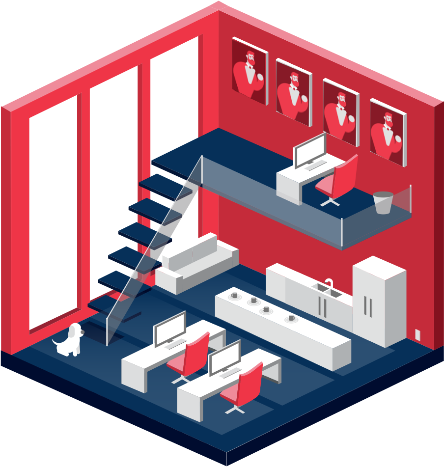

“How does the environment in which creative professions work in hinder/excel their creativity and productivity?”
Workspace Productivity
Productivity, in definition is measured in terms of the rate of output per unit of input. In the case of the creative field, productivity comes a long way in terms of input, as producing both functional and yet appleasing innovations require a relatively demanding process. Many companies focus on the wrong aspects of their productivity, thus resulting to employees overworking, wasting valuable time, developing poor mental health, and having a lack of creativity.
Scenario
David is CEO of ABC design, a multidiscipline design firm with around 50 employees, ranging from designers to developers. Lately David has been noticing a decrease in productivity in his studio. His employees seem to be less energetic, enthusiastic, x, and y.
Hover over me
Tooltip text
×
Modal Header
Some text in the Modal Body
Some other text...
Small Studio

Small Studio
Smaller firms have a different working environment where they need to be heavily familiar with the people they’re working with. Since the space and team is often quite small, the environment is more intimate.
Important aspects: time management & communication both aspects affect job satisfaction
Minimize unexpected interruptions; consider establishing quiet time
Communication
The more where everyone knows about where everyone is, the easier working together will be